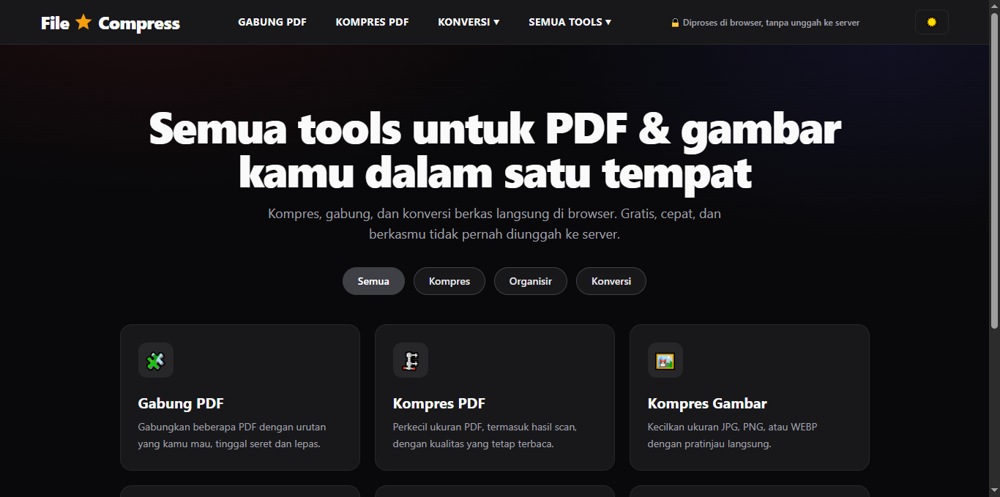

Building Digital
Tools & Web Apps
Selamat datang di portofolio saya. Di sini saya merangkum berbagai proyek aplikasi web interaktif, utilitas dokumen, dan eksperimen pemrograman yang berfokus pada fungsionalitas serta kenyamanan pengguna.
Syahbarudin Abdillah
Informatics Engineer
Universitas Pelita Bangsa
S1 Teknik Informatika
Lokasi: Kab. Bekasi, Jawa Barat
ID: 312210656
Featured Web Applications
01 // PROJECTSSNAKE ARCADE
CLASSIC MODE
Snake Arcade — Classic Game
Live AppGame Snake klasik dengan tampilan arcade modern. Makan untuk membuat ular semakin panjang, kejar skor tertinggi, dan bertahan selama mungkin. Bisa dimainkan dengan tombol arah di keyboard maupun kontrol di layar.

Multi-Format Media & Document Tools
Live AppPlatform web produktivitas interaktif yang dirancang untuk memudahkan pengguna dalam mengompres gambar/PDF, menggabungkan dokumen, serta melakukan konversi format berkas secara instan. Dilengkapi mekanisme keamanan in-memory processing agar data privasi pengguna tetap aman.
Technical Skills
02 // STACKSReact & Vite
Modern Frontend
Python & Streamlit
Utility & Web Apps
PHP & Laravel
Web Development
MySQL Database
Data Management